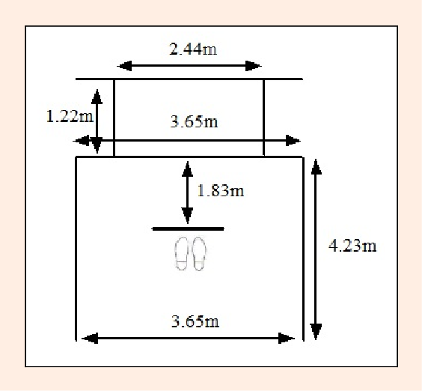
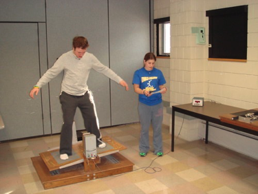

The amount and distribution of practice
The amount of practice and the spacing or distribution of that practice can affect both practice performance and the learning of motor skills.
![]()
March 28, 2024
Credits
This slide presentation is based on the latest version of Magill & Anderson (2020).
Learning objecitves
- Define overlearning in terms of how it relates to the decision about the amount of practice time needed to learn motor skills
- Describe how an overlearning practice strategy influences the learning of procedural skills and dynamic balance skills.
- Discuss the relationship between overlearning and other practice condition variables.
- Describe how the concept of practice distribution is related to the intertrial interval and to the length and distribution of practice sessions.
- Discuss evidence supporting the benefit for distributed practice of the distribution of practice sessions and possible reasons for this benefit.
- Compare and contrast massed and distributed intertrial interval schedules for discrete and continuous skills.
- Describe how to implement knowledge of massed and distributed practice in various skill learning situations.
Importance of Practice Amount in Motor Skill Learning
- Intense and prolonged practice is crucial for attaining expertise in any field, as highlighted by Ericsson’s research indicating a minimum of ten years for expertise development.
- Our focus here is on achieving specific performance goals within a limited practice period.
Practice in Various Contexts
- Determining the optimal practice amount is vital in educational, sports, and rehabilitation settings, where time is often constrained.
- Physical education teachers, coaches, and therapists must navigate these limitations to meet performance goals effectively.
Guidelines for Effective Practice
- This discussion aims to establish guidelines for making the most out of available practice time, especially in contexts with strict time constraints.
- The goal is to achieve specific skill performance goals efficiently, given the practical limitations of the setting.
Overlearning in motor skill learning
- Definition: Overlearning involves continuing practice beyond the level required to achieve a specified performance criterion.
- Implemented by setting a performance goal and then requiring additional practice beyond goal achievement.
Theoretical Foundations
- Motor Program-Based Theory: Extra practice strengthens generalized motor programs, enhancing skill recall.
- Dynamical Systems Theory: Increases stability in the coordination and control aspects of skill performance.
Research Insights
- Driskell et al. (1992) reviewed 15 studies spanning 1929-1982, involving almost 4,000 subjects, to assess overlearning effects.
- Findings: Overlearning positively impacts retention performance, with 50 to 200 percent extra practice showing proportionate retention improvements.
Considerations for Different Skill Types
- Although overlearning generally benefits motor skill retention, its effects can vary among different types of motor skills, which will be explored further.
Introduction
- Is more practice better?
- The “more practice is better” approach is not always beneficial for learning.
- Before scheduling practice sessions, what are the three things that one needs to decide?
- the amount of time to devote to each activity in a session
- the length of each session, and
- the amount of resting time between sessions
Overlearning and Learning Motor Skills

- What is Overlearning?
- Continuation of practice beyond the amount needed to achieve a certain performance criterion. Is there empirical evidence for the benefits of overlearning?
- Is there empirical evidence for the benefits of overlearning?
- Overlearning can positively influence the retention of motor skill learning.
- The instructor must:
- Establish a performance criterion; 20 kicks under 30s
- Wall Soccer Test Provide the learner time to achieve it;
- If they achieve the goal in 10 trials (average time of several students), then you could…
- Devote a percentage of that time as extra practice (10 more trials) extra practice (100%)
Distribution of practice in motor skill learning
You have a specific amount of time to practice for a future “test”:
What is the best way to schedule the available time: the length and frequency of the practice sessions?
Massed vs. Distributed practice
Massed practice
- Longer practice sessions and shorter rest between sessions.
- Longer practice trials and shorter rest between trials within each session.
Distributed practice
- Time is distributed across many shorter sessions.
- Shorter practice trials and longer rest between trials within each session
- Focus is on the relative amount of time for active practice for a trial and the rest between trials.
- The inherent problem when investigating practice distribution: No definitions of the terms “massed” and “distributed”.
if we use the previous example, the 30-min session, without stopping would be considered a type of massed practice, when compared to, for instance, the three other types of practice schedules (the 15, 10, and 5-minute sessions).
The benefit of distributed practice
Research related to the length and distribution of practice sessions shows support for the benefit of distributed practice.
Better learning results when people practice skills in more frequent and shorter sessions.
See experiments by:
- Baddely and Longman. (1978)
- Shea et al. (2000)
- Dail and Christina. (2004)
Baddely and Longman (1978)
Introduction to the Study
- Investigation into how training session duration and frequency impact learning to type.
- Conducted by A.D. Baddeley & D.J.A. Longman, published in Ergonomics, 1978.
- Participants
- Study involved post office workers learning to type.
- Groups divided based on training session length (short vs. long) and frequency (daily vs. less frequent).
- Methodology
- Objective: Determine the most efficient training regimen for typing proficiency. Comparison of different training schedules: Shorter, more frequent sessions versus longer, less frequent ones.
Baddely and Longman (1978)
- Key Findings
- Optimal regimen identified as 1-hour sessions, 4 days a week.
- Demonstrated that shorter, more frequent training sessions led to more efficient learning rates.
- Implications for Skill Acquisition
- Supports the notion of distributed practice over massed practice for effective learning.
- Influences design of educational practices, training programs, and human factors design.
- Theoretical Contributions
- Highlights the significance of the spacing effect in learning.
- Raises questions about cognitive mechanisms behind the effectiveness of distributed practice.
- Conclusion
- Baddeley and Longman’s (1978) study underscores the importance of considering session structure and scheduling in training and education for optimal skill acquisition and performance enhancement.
Shea et al. (2000)
To investigate the effect of distributing practice sessions in multiple days, in this case: 2 days, compared to 1-day acquisition.
Setup
- One group participated in two practice sessions on one day, and another group participated in one session on each of the two days.
- The graph in this slide shows the amount of balance error for each 90 second trial, on a continuous dynamic balance task.
- Conlcusion: 1-day acquisition group (massed practice schedule) committed more errors compared to the 2-day acquisition group (distributed practice schedule).

Taking all studies together
When considered in terms of the types of motor skills involved in the experiments, the benefit of distributed practice extends to a variety of types of skills, which include discrete and continuous skills as well as open and closed skills.
Why distributed practice is better?
- Fatigue hypothesis
- Cognitive effort hypothesis
- Memory consolidation hypothesis
Fatigue and Learning
Fatigue’s Influence on Learning in Massed Practice
- Fatigue is not directly assessed in related experiments but is suspected to influence learning.
- Task demands are high, which suggests that fatigue could impact performance and learning.
Case Studies: Massed vs. Distributed Practice
- Shea et al. (2000): Continuous balance task with massed practice led to 14 trials on the same day, while distributed practice had trials on subsequent days.
- Dail and Christina (2004): Massed practice consisted of 240 putts in one session, versus distributed practice with 60 putts per session.
Cognitive Effort in Practice
- Massing practice within a short time may diminish cognitive effort on each trial after a certain point.
- An excessive amount of practice can lead to reduced learning, as it may become monotonous or boring.
- Consequently, the learner may exert less cognitive effort, negatively affecting the level of learning achieved.
Insights from Research
- The reduction in learning was observed in the experiments by Shea et al. (2000) and Dail and Christina (2004).
- Practice performance declined only after several trials in the massed practice condition, suggesting fatigue or reduced cognitive effort impacts.
Influence on Performance and Learning
- Fatigue and decreased cognitive effort impact both practice performance and retention test performance.
- This indicates a negative effect on the learning of skills due to the practice conditions.
Memory Consolidation Hypothesis
- Memory consolidation is crucial for long-term memory storage of skills.
- It involves neuro-biochemical processes that solidify unstable memories into permanent ones.
- These processes require time without practicing the same skill.
Practice Distribution and Memory
- Spreading practice over several days allows for more effective memory consolidation.
- Massed practice does not provide sufficient time for these neuro-biochemical processes to occur optimally.
Supporting Studies
- Research by Brashers-Krug, Shadmehr, & Bizzi (1996) and Shadmehr & Brashers-Krug (1997), as well as Simmons (2011), supports the importance of time between sessions for memory consolidation.
The Intertrial Interval and Practice Distribution
- Research on practice distribution has primarily focused on the intertrial interval — the rest time between practice trials.
- Definitions vary, but for clarity:
- Massed Practice: Very short or no rest between trials, making practice nearly continuous.
- Distributed Practice: Relatively long rest intervals between trials or groups of trials.
Definitions and Motor Skill Learning
- Despite the ambiguity of terms like “very short” and “relatively long,” these definitions help generalize findings from research to practical motor skill learning contexts.
Controversy in Practice Distribution Research
- A considerable body of research on practice distribution, particularly the intertrial interval, has spurred controversy over which schedule promotes better learning.
- Reviews and motor learning textbooks offer varied answers, contributing to the debate.
Underlying Issues
- Practice Performance vs. Learning: Not all studies used retention or transfer trials to measure learning, as opposed to mere performance during practice.
- Skill Type Consideration: Often, the differential effects of practice schedules on various types of skills were not accounted for in research.
Resolving the Controversy
- Meta-analyses by Donovan & Radosevich (1999) and Lee & Genovese (1988) assessed the literature to clarify the impact of practice distribution.
- They concluded that the type of skill being learned (continuous or discrete) is a crucial factor in determining the optimal practice distribution.
Task-Specific Distribution Effects
- Evidence suggests that optimal practice distribution differs for continuous versus discrete skills, which will be discussed further in the context of these skill types.
Continuous Skills and Practice Distribution
- Continuous motor skills are commonly used to study the effects of massed versus distributed practice.
- The rotary pursuit task is a popular choice for such studies.
- Participants keep a stylus in contact with a rotating disk for a set time (e.g., 20 or 30 seconds).
- This task allows clear definition of massed (little to no rest) and distributed (rest as long or longer than the trial) intertrial intervals.
Methodological Advantages
- The simplicity in defining massed and distributed practices in this context allows for distinct classification of practice schedules.
Research Findings
- Review by Lee and Genovese (1988) indicates that distributed practice consistently yields better learning outcomes than massed practice for continuous motor skills.
Discrete Skills and Practice Distribution
- Discrete skills present a unique challenge for research on massed versus distributed practice.
- Definition problems arise because
discrete responses are typically very short.
Operational Definitions and Discrete Tasks
- In a discrete task, the massed and distributed intertrial intervals could be almost identical in duration.
- For instance, with a rapid-aiming task taking 150 msec, the distributed practice might also have a 150 msec intertrial interval.
- This similarity makes defining “massed” and “distributed” critical for discrete task experiments.
Research on Discrete Skills
- Discrete tasks are rarely used for comparing practice distributions.
- Lee and Genovese (1988) only identified one study by Carron (1969) that used a discrete task.
- Evidence from this and a subsequent study (Lee & Genovese, 1989) suggests massed practice may enhance learning for discrete motor skills.
Discrete vs Continous
Swimming
Volleyball serve
Implications - Overlearning
- The overlearning strategy works best when the practitioner knows how much practice (i.e., number of trials or amount of time) a person needs to achieve a certain performance level.
- The overlearning strategy can be effective for skills that people will practice for a specified amount of time but then not perform for some period of time afterward (e.g., the disassembling and assembling of the machine gun in the Schendel and Hagman study).
- Practitioners should not base the amount of extra practice to provide on the view that “more is better.” There can be a point of diminishing returns where the extra practice does not yield results proportional to the amount of time and effort required by the extra practice, and the extra practice could actually lead to poorer test performance than would no extra practice. One way to determine the amount of extra practice is to require 100 percent more practice than the amount required by the person to achieve the specified performance criterion.
- Practice requiring the performance of variations of skill characteristics can be an effective means of establishing an overlearning situation.
Implications - Practice Distribution
- Practice sessions can be too long. When in doubt about how long a session should be, opt for a shorter rather than a longer amount of time. If people need more practice time, add more sessions rather than lengthen sessions.
- More frequent practice sessions are preferable to fewer sessions.
- Time saved in terms of the number of days of practice can be a false savings because massing sessions too close together can lead to poor long term results.
- The length and number of sessions desired by students, trainees, athletes, or patients may not represent the best schedule for learning the skills they need to learn. Remember that if the postal trainees in the Baddeley and Longman study had been allowed to choose their own training schedules, they would have chosen the schedule that led to the poorest learning.
- Make practice trials relatively short for skills that last a reasonably long time and require repetitive movements, such as swimming, bicycling, dancing, keyboarding, and piano playing. Shorter but more trials lead to better learning than longer trials that are infrequently repeated.
- For skills that require relatively brief amounts of time to perform (e.g., hitting a golf ball, serving a tennis ball, shooting a basketball, throwing darts, reach-and-grasp activities), make rest intervals between practice trials short.